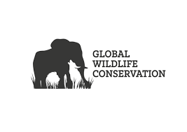

ANIMAL CONSERVATION
What is Wild Life Conservation?
-
Wildlife conservation is the preservation and protection of animals, plants, and their habitats.
By conserving wildlife, we're ensuring that future generations can enjoy our natural world and the incredible species that live within it.
How many types of wildlife are there?
- The most widely-cited estimate is 8.7 million species (but this ranges from around 5 to 10 million).
What are the 4 types of conservation?
- Environmental Conservation.
- Animal conservation.
- Marine Conservation.
- Human Conservation.
There are four types of conservation
What are the benefits of wildlife conservation?
- Promotes pollination and continuity of native plant species.
- Medicinal value.
- Aesthetic benefits.
- It is fun and entertaining!
- Preserves heritage and culture.
- Promotes tourism attraction.
- Protection of biodiversity and endangered species.
- Economic benefits associated with tourism
- Protects the livelihoods and knowledge of indigenous people
- It serves as a preserve for future generations
What are conservation methods?
-
It involves using resources and environments to attain sustainable yields whilst
maintaining environmental quality; including maximum biodiversity of genetic resources, minimal pollution and optimum aesthetic appeal.
See more
back to the top